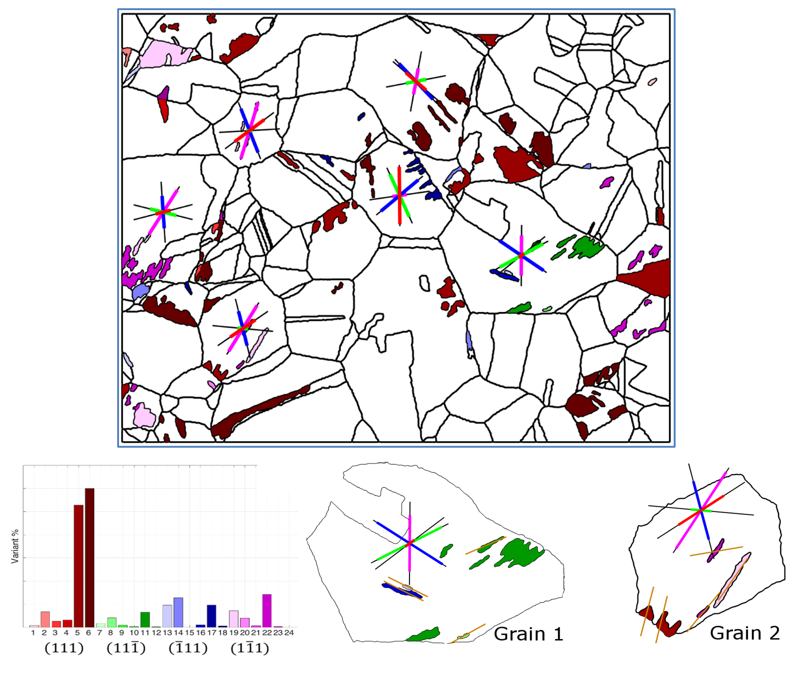
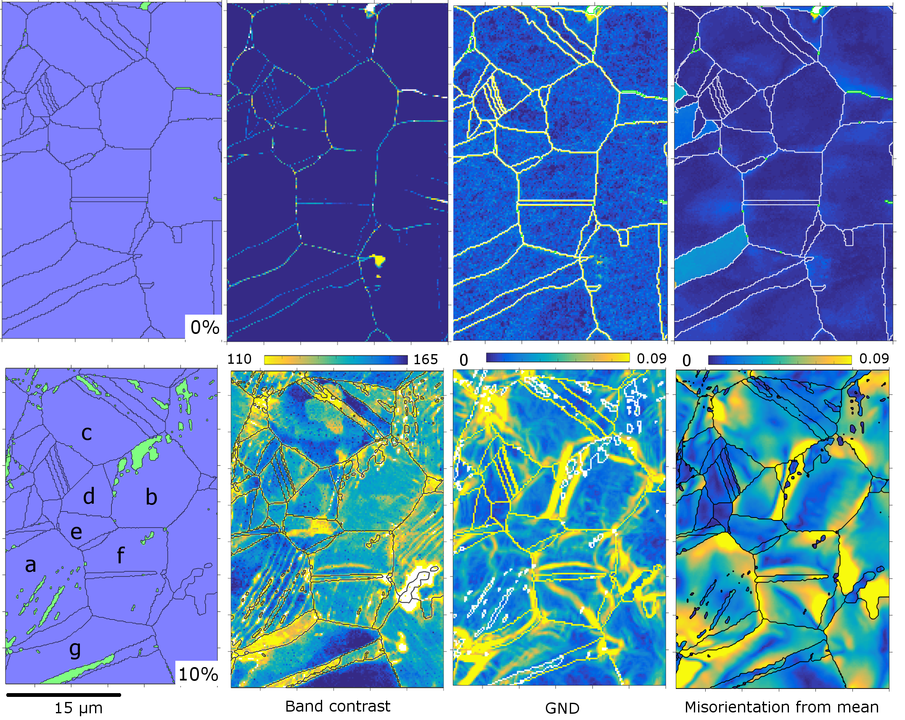
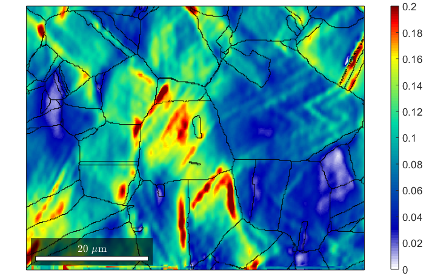
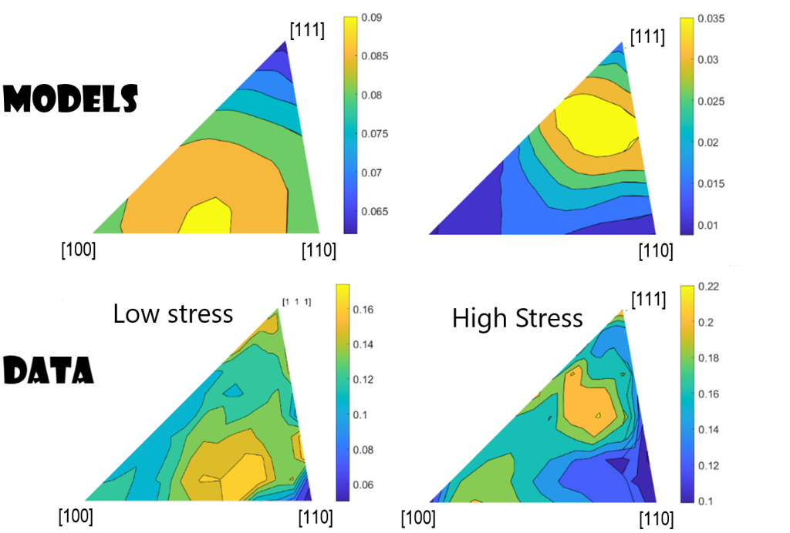
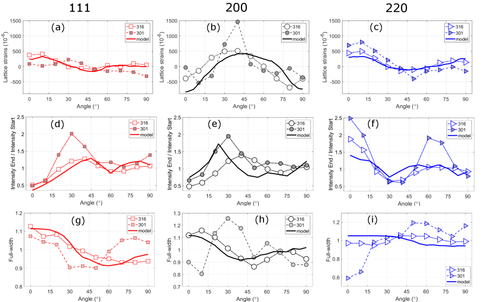
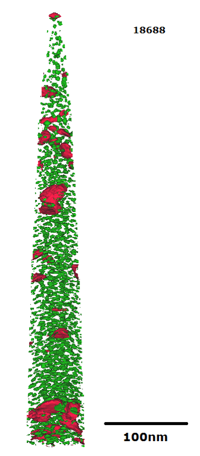
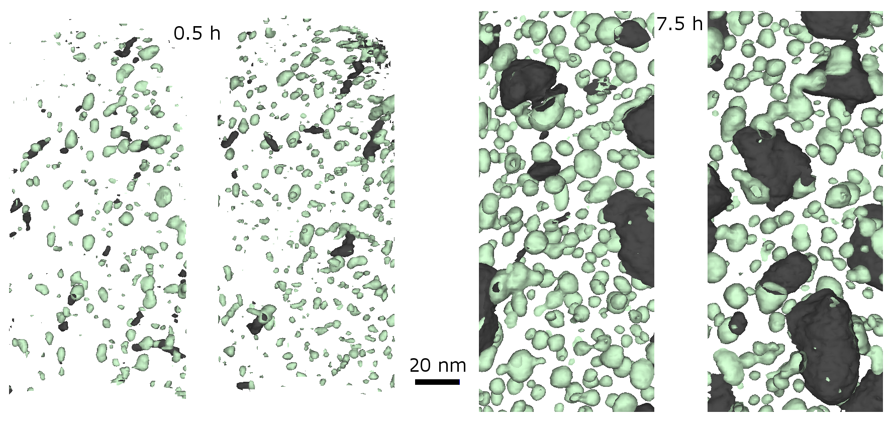
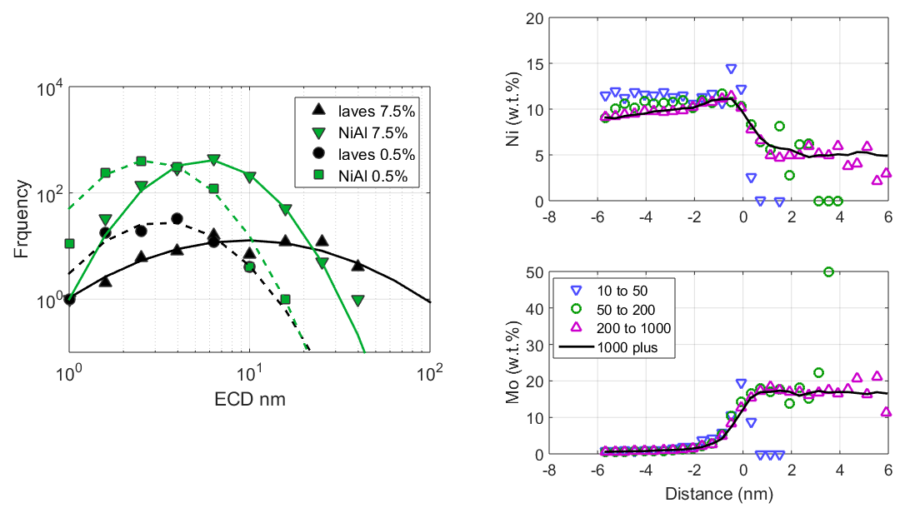
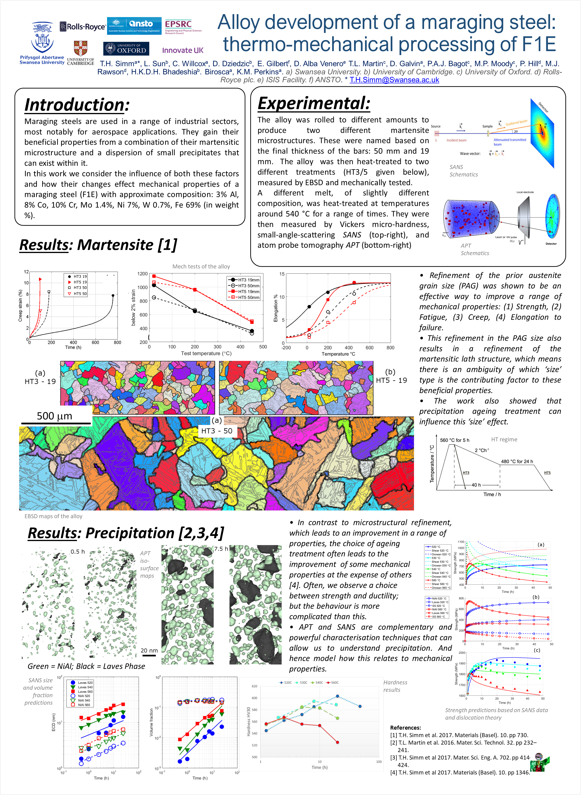
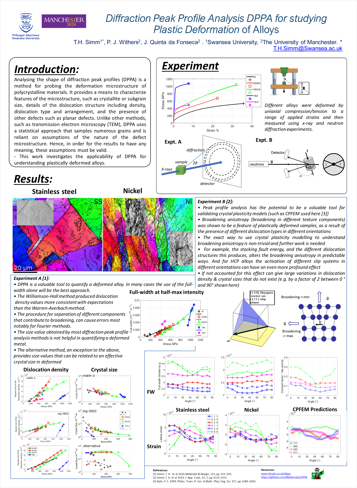

Data Viz
- toc:true
- branch: master
- badges: true
- comments: true
- author: Thomas H. Simm
- categories: [data viz, posters, data science, Thomas Simm]

Some data visualizations from my work in metallurgy. Most of my work was line plots so tried to keep these to a minimum here.
EBSD
Electron backscatter diffraction (EBSD) is a scanning electron microscope–based microstructural-crystallographic characterization technique commonly used in the study of crystalline or polycrystalline materials.[1][2] The technique can provide information about the structure,[3] crystal orientation ,[3]phase,[3] or strain[4] in the material.
[1] Randle, Valerie; Engler, Olaf (2000). Introduction to texture analysis: macrotexture, microtexture and orientation mapping (Digital printing 2003 ed.). Boca Raton: CRC Press. ISBN 978-9056992248.
[2] Schwartz, A. J.; Kumar, M.; Adams, B. L.; Field, D. P. (2000). Electron backscatter diffraction in materials science. New York: Kluwer Academic.
[3] Electron backscatter diffraction in materials science (2nd ed.). Springer Science+Business Media. 2009. p. 1. ISBN 978-0-387-88135-5.
[4] Wright, Stuart I.; Matthew, M. Nowell; David, P. Field. (2011). “A review of strain analysis using electron backscatter diffraction”. Microscopy and Microanalysis. 17. 17 (3): 316–329. Bibcode:2011MiMic..17..316W. doi:10.1017/S1431927611000055. PMID 21418731.
From: https://en.wikipedia.org/wiki/Electron_backscatter_diffraction

A matenistic steel showing prior austenite grains. The top image has undergone an additional rolling regime resulting in smaller grain size.
This is your classic EBSD orientation map with a twist in that the orientations are predicted. The colours represent different orientations given by the legend on the left- they are a vector [phi1,Phi,phi2] (MTEX) with each spatial point having it’s own vector. The colours are reconstructed using ARPGE to give a prediction on what the grains would be prior to cooling, based on the rotation matrix between adjacent elements. There are two problems here, defining the orientation relationships (or rotations) between neighbours and reconstructing grains. In the next case we can ignore the first. An austenitic stainless steel that transforms to martensite under load. This is similar to the above example, but easier to solve as we only need to look at the rotation across one boundary at a time. In the top figure the coloured regions represent a different phase (martensite) with austenite grains and the particular colour what the orientation relationship (OR) is. The lines show the slip systems and the maximum Schmid factor. Basically, some OR are preferred, the direction of the martensite relates to the particular OR and the Schmid factors.
 The change in various EBSD maps of an austenitic stainless steel (see above) before and after being pulled to 10% strain. See also the image below. Each set of maps (on horizontal axis and below) give a different measure of plastic deformation. But if we look closely we can see some areas with high values of one parameter can have low values of another. Even if we average over a grain it can be difficult to predict behaviour. These observations illustrate aspects of plastic deformation such as the chaotic nature and the none unique definition of plastic deformation.
 This is a localised strain map of the sample shown above but a slightly bigger region. This is produced by digital image correlation (DIC) by comparing two surface images. The data is then combined with the EBSD data allowing us to visualise the grain boundaries (black lines).
So how do we take account of orientation differences in grains (they matter) AND the chaotic nature of deformation and differences in parameters?
We do some averageing
 This is a classic plot in metallurgy called the inverse pole figure (IPF) plot. Simply put each point on the triangle represents a different group of orientations. We are averageing based on an orientation criteria. In the top figures are two models that relate to plastic deformation (Schmid factor left and Taylor model right) plotted on to this IPF plot. The bottom two figures represent experimental data of a ‘Damage parameter’ (number of un-indexed points on boundary) of grains after creep deformation of an austenitic stainless steel. Clearly (hopefully), we can see a transition from type with increasing stress and overall plastic deformation. {Some adjustments could be done on the algorithm to create the plots but the main points remain}

In a similar manner we can average details of a sample based on orientation in a different manner, as shown here. The reason for this averaging is so we can combine EBSD with powder diffraction (X-ray and neutron). Powder diffraction provides useful insights on some parameters connected to EBSD such as texture, plastic deformation and phases. Furthermore, the information can be from larger volumes of the sample (and not just the surface) than EBSD. However, the way it is measured means we have to modify how we combine the data.
In the figure crystal plasticity models are compared with experimental data for EBSD and powder diffraction on the same axis.APT
The atom probe was introduced at the 14th Field Emission Symposium in 1967 by Erwin Wilhelm Müller and J. A. Panitz. It combined a field ion microscope with a mass spectrometer having a single particle detection capability and, for the first time, an instrument could “… determine the nature of one single atom seen on a metal surface and selected from neighboring atoms at the discretion of the observer”.[1]
https://en.wikipedia.org/wiki/Atom_probe
 The image is an APT tip (a 3D cylinder type shape) showing iso-surfaces for two different elements (i.e. inside these surfaces the composition of an element {Ni and Mo here} is higher than a set value). This image is typical of APT analysis and produced from a designated software package.
 This transforms data similar to shown above, first the APT data was cut into slices- this makes it easier to visualize the density and details and compares better with other techniques such as TEM. Secondly, I adjusted colours and contrast to improve the visual feel.
 The above maps are pretty but very qualitative. Some extra details can be found by extracting details from the data as shown here.
Posters

